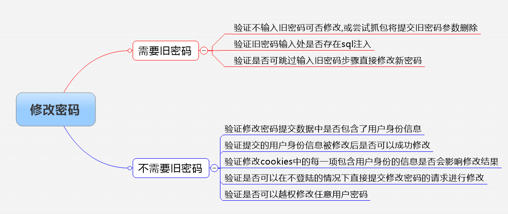

[toc]
逻辑漏洞
可安装webbug3.0系统模拟攻击
逻辑漏洞基础信息
之所以称为逻辑漏洞，是因为代码之后是人的逻辑，人更容易犯错，是编写完程序后随着人的思维逻辑产生的不足。 sql注入、xss等漏洞可以通过安全框架等避免，这种攻击流量非法，对原始程序进行了破坏，防火墙可以检测 而逻辑漏洞是通过合法合理的方式达到破坏，分别为不安全对象引用和功能级别访问控制缺失。 * 不安全对象引用，指的是平行权限的访问控制缺失， 比方说，A 和 B 两个同为一个网站的普通用户，他们之间的个人资料是相互保密的，A用户的个人资料可以被 B 用户利用程序访问控制的缺失恶意查看，由于 A 用户和 B用户之间是一个同级的账号，因此称为平行权限的访问控制缺失。 * 功能级别访问控制缺失，指的是垂直权限的访问控制缺失 比方说，A 账号为普通账号、B 账号为管理员账号，B 账号的管理页面时必须是以管理员权限登录后方可查看，但 A 账号可通过直接输入管理页面 URL 的方式绕过管理员登录限制查看管理页面，由于 A用户和 B用户的权限是垂直关系，因此称为垂直权限的访问控制缺失。 该类型属于业务设计缺陷的安全问题，因此传统的扫描器是无法发现的，只能通过手工的渗透测试去进行检查。在金融平台中以平行权限的访问控制缺失较为常见。
建议在乌云镜像站多看看别人挖掘逻辑漏洞的过程
常见的逻辑漏洞：
- 越权修改
- 越权查询
- 验证码回传
- 未进行登陆凭证验证
- 订单金额任意修改
- 密码重置
- 突破限制等
挖掘逻辑漏洞的环节：
把握住传参就能把握住逻辑漏洞的命脉
- 确定业务流程
- 寻找流程中可以被操控的环节
- 分析可被操控环节中可能产生的逻辑问题
- 尝试修改参数触发逻辑问题
1️⃣越权访问
越权访问（Broken Access Control，简称BAC）是Web应用程序中一种常见的漏洞，在实际的代码审计中，这种漏洞往往很难通过工具进行自动化监测，因此在实际应用中危害很大。
原理说明
如果使用A用户的权限去操作B用户的数据，A的权限小于B的权限，如果能够成功操作，则称之为越权操作。 越权漏洞形成的原因是后台使用了不合理的权限校验规则导致的。 一般越权漏洞容易出现在权限页面（需要登录的页面）增、删、改、查的的地方，当用户对权限页面内的信息进行这些操作时，后台需要对当前用户的权限进行校验，看其是否具备操作的权限，从而给出响应，而如果校验的规则过于简单则容易出现越权漏洞。 如果有waf的时候,优先考虑越权漏洞和逻辑漏洞
1、水平越权：
权限类型不变，权限ID改变
水平越权访问是一种【基于数据的访问控制】设计缺陷引起的漏洞。由于服务器端在接收到请求数据进行操作时没有判断数据的所属人/所属部门而导致的越权数据访问漏洞。
水平越权测试方法：主要通过看看能否通过A用户操作影响到B用户
2、垂直越权：
权限ID不变，权限类型改变
垂直越权是一种【基于URL的访问控制】设计缺陷引起的漏洞，又叫做权限提升攻击。
垂直越权测试思路：看看低权限用户是否能越权使用高权限用户的功能，比如普通用户可以使用管理员的功能。 先抓包高权限用户的某一操作，在抓包低权限用户包，将低权限用户cookie等复制到高权限包中，看能否完成同样的操作
真实案例：XX网参数越权
问题描述：测试过程中发现，用户在“地址管理”功能模块可越权查看任意收货信息，造成用户敏感信息泄露。
1、在地址管理中，选择“修改”，此时用抓包工具截断GET请求：
#抓包数据链接为：
***.com
#将address_id参数值替换为任意数值如2222：
#提交后发现返回了对应用户的收货信息
越权漏洞突破思路
- 一般管理页面可能存在越权漏洞 如果是白盒测试的话 找到admin相关 需要管理员账号才可以访问的文件 针对于前端绕过 访问该目录，可能会有一个js拦截，我们利用浏览器隐私安全性设置找到javascrip禁用 添加网站，再次进入可能会成功 针对于后端绕过 对于没有判断登录状态refer或者判断不标准，抓包修改为合法的refer就可以绕过
- 有的对于用户管理的地方可能有，例如更改用户收货地址等 先用自己的账号登录，之后抓包，将id等改变一下，查看返回值验证
- 有时候通过将cookie修改为他人的，也可以实现越权
- 参数也可能有越权漏洞，例如订单编号等等
- 注册过程中，输入已经注册过的邮箱，在相应信息中可能有返回信息的
- 还有修改密码如果没有对手机号位数限制（数字位数，或者空格等特殊符号）也可能有漏洞
小结：在找越权的时候，对参数要有很强的关注，可以每一个都试一试
2️⃣交易支付中的逻辑问题：
支付的逻辑漏洞的一般思路
一种是少充多得，比如充值100元时通过篡改金额改成10元，最终充值完毕后账户变成了100元，而实际付款却只有10元； 一种是绕过活动页金额限制，比如很多公司做活动强制用户充值金额不能低于10000，而通过拦截修改金额，可以充值任意金额。
一般购物流程：
- 挑选商品加入购物车
- 确认购物车信息
- 输入物流及收货人信息
- 确认订单进入支付环节
- 交易成功等待发货
购物流程中可能的逻辑问题：
-
加入购物车时是否可以修改购买数量为负数,商品价格是否可以修改.
-
确认购物车信息时是否可以修改商品数量为负数,是否存在折扣限制突破问题,是否可以修改商品总金额.
-
输入物流信息时是否可以控制运费,如果可以,尝试修改为负数.
-
确认订单后跳转支付接口时是否可以修改支付金额,可否不支付直接跳转到交易成功环节.
预防思路：
增加多重检验，订单较大时增加人工审核。
实案例：信用卡还款服务费被绕过
问题分析：测试发现，微钱包信用卡还款功能处存在服务费可绕过漏洞，测试过程如下：
1、选择信用卡还款功能，填写相关还款数值后，截断信用卡还款GET请求，将f参数值修改为1：
2、提交修改后的请求，页面返回成功：
3️⃣密码修改逻辑漏洞：
重置密码对一个系统来说是非常重要的存在，所以存在的问题也是非常致命。
- 用户在重置密码页面，通过修改用户ID对所改用户密码进行重置；
- 对密码重置页面验证码绕过，然后爆破进行等。
密码修改逻辑漏洞验证

* 首先走一遍正常的密码修改流程,把过程中所有环节的数据包全部保存. * 分析流程中哪些步骤使用了哪些身份认证信息,使用了哪些认证方法. * 分析哪个步骤是可以跳过,或者可以直接访问某个步骤. * 分析每个认证方法是否存在缺陷,可否越权 * 首先尝试正常密码找回流程,选择不同找回方式,如邮箱,手机,密码提示问题等. * 分析各种找回机制所采用的验证手段,如验证码的有效期,有效次数,生成规律,是否与用户信息相关联等. * 抓取修改密码步骤的所有数据包,尝试修改关键信息,如用户名,用户ID,邮箱地址,手机号码等。详细看以下案例：
***.com ***.com ***.com ***.com ***.com ***.com ***.com ***.com
预防思路：
系统后台在重置密码页面验证是否为本用户等。
4️⃣验证码回传：
漏洞原因
这个漏洞主要是发生在前端验证处，只要拦截数据包就可以获取敏感信息，并且经常发生的位置在：账号密码找回、账号注册、支付订单等。验证码主要发送途径邮箱邮件 、手机短信。黑客只需要抓取Response数据包便知道验证码是多少。
预防思路：
response数据内不包含验证码，验证方式主要采取后端验证，但是缺点是服务器的运算压力也会随之增加；要进行前端验证的话使用加密进行。
5️⃣接口无限制枚举：
有些关键性的接口因为没有做验证或者其它预防机制，容易遭到枚举攻击。
真实案例：用户激活邮件炸弹攻击
问题描述：测试发现，用户使用邮箱注册时，发送激活邮件功能可进行邮件炸弹攻击。测试过程如下：
- 用户在激活账号过程中选择“重新发送”：
- 将GET请求中的uid参数值为其他uid（需要此uid的用户也使用邮箱注册）：
- 重放此数据包，可形成邮件炸弹攻击，响应包中提示发送成功：
防范措施：
- 使用最小权限原则对用户进行赋权;
- 永远不要相信来自用户的输入，使用合理（严格）的权限校验规则;
- 使用后台登录态作为条件进行权限判断,别动不动就瞎用前端传进来的条件;
- cookie中设定多个验证，比如自如APP的cookie中，需要sign和ssid两个参数配对，才能返回数据。
- 用户的cookie数据加密应严格使用标准加密算法，并注意密钥管理。
- 用户的cookie的生成过程中最好带入用户的密码，一旦密码改变，cookie的值也会改变。
- cookie中设定session参数，以防cookie可以长时间生效。
6 逻辑漏洞导致的问题
业务安全问题
一些生产环境中可能出现的实际问题，我认为这不只是渗透测试工程师需要针对的，也是一些开发人员需要意识到的
账户安全
盗号、撞库等身份盗用问题 “撞库”攻击的形式 * 尝试登录大量【用户名+密码】组合 * 利用已泄露的多家网站用户数据库 * “盗号”产生的风险 * 用户隐私受影响 * 账户资金受影响 * 企业投诉和赔付率上升
资源滥用
- 刷单/恶意下单 供应商刷单赚取信用 竞争对手互相下单 报复性下单
- 控制库存影响正常销售 自动加购物车，自动下单 购物车过期后，重复上一步骤 正常用户不能购买 企业商品无法售出
- 恶意调用短信发送接口 封装多个网站短信发送接口为一个API 向指定手机发送短信炸弹，强制对方关机 企业遭受客户投诉导致短信通道被迫关停
- 注册检查薄弱被利用接口 利用简单的注册判断接口，检查全国手机号是否在网站注册 放大这个请求，结果是灾难……为盲目“撞库”提前筛选用户名
- 恶意注册产生“马甲”用户 抢占正常用户资源 影响企业营销效果 产生虚假数据 隐藏的“炸弹”